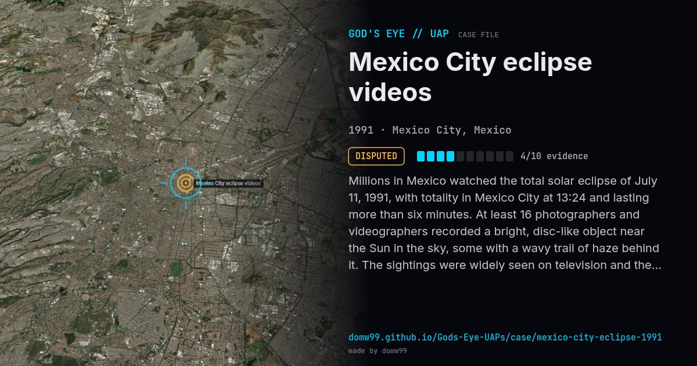

Mexico City eclipse videos

Millions in Mexico watched the total solar eclipse of July 11, 1991, with totality in Mexico City at 13:24 and lasting more than six minutes. At least 16 photographers and videographers recorded a bright, disc-like object near the Sun in the sky, some with a wavy trail of haze behind it. The sightings were widely seen on television and the case is a classic in Mexican ufology. Astronomers pointed out that the darkness of totality shows Venus, which stood a few degrees from the star Regulus, and that other planets also come into view, which fits many of the videos but not necessarily the apparent motion some of them show.
Explanation
Astronomers identified the brightest object as Venus (with Mars and Regulus nearby), made visible by the darkness of totality. Reflections in glass, camera artefacts and hoaxes account for others; not every video has been explained.
What was seen
Shape: Metallic disc or bright point, sometimes with a wavy haze
Witnesses: Dozens of video and photo recordings by different people
Duration: Minutes, during totality